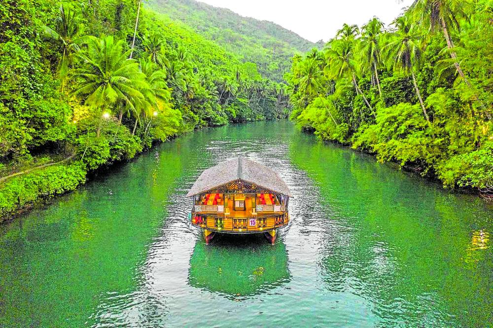
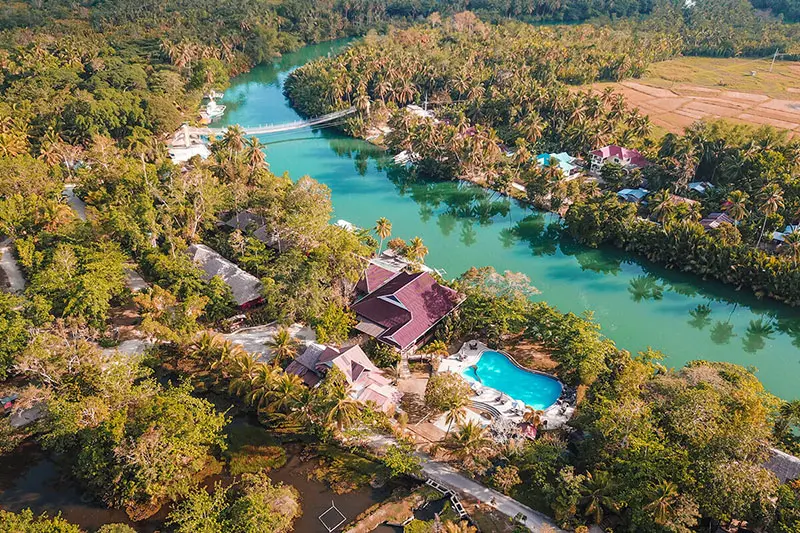
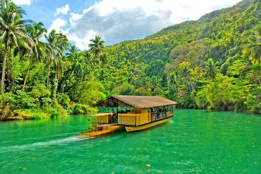

HOME
*Philippines Best Spots*
Welcome to the Pearl of the Orient Seas
The Loboc River Cruise in Loboc town is a significant highlight in most Bohol countryside tours. It usually comes inclusive of a generous buffet lunch, or dinner served right on the raft. This floating restaurant also has singers and musicians onboard to serenade guests while they enjoy popular Filipino dishes.The river cruise starts from Loay Bridge near the Church of San Pedro. Midway through the 1-hour cruise, the raft stops in front of a large hut for a short performance by more singers and dancers dressed in traditional baro't saya. The raft moves along the river until it reaches a small portion of Busay Falls, from which it maneuvers for the return trip.



Back